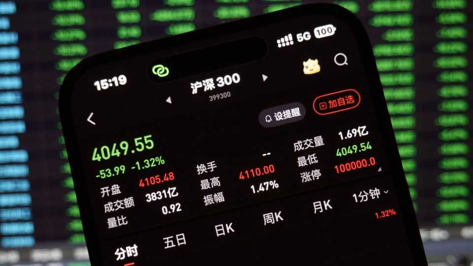
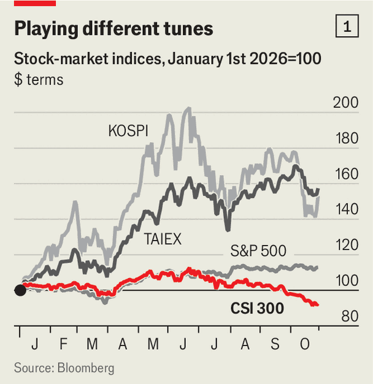
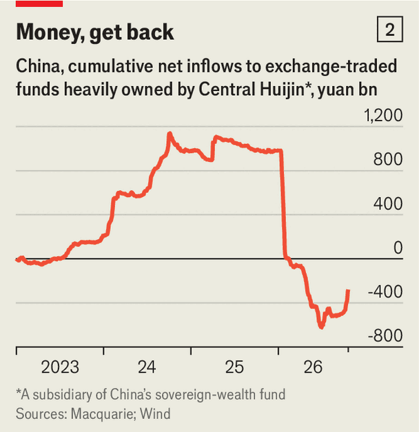

China’s stock markets are the great global exception
If the country is winning the future, why are its investors so glum?

Oct 29th 2026
ACCORDING TO Moonshot AI, a leading artificial-intelligence firm based in Beijing, “What truly matters lies beyond the reach of human sight.” That is one reason why its Chinese name translates as “Dark Side of the Moon”. (Another may be the founder’s love of Pink Floyd.)
The startup, which hopes to list in Hong Kong next year, illustrates many of China’s AI strengths. Its founders are talented and dedicated. Its Kimi K3 model, which it has just upgraded, is lean and powerful. The country is determined to make the most of the new technology. Its economy, like America’s, Taiwan’s and South Korea’s, lies firmly within the orbit of the global AI boom. But unlike those places, where optimism waxes and wanes, China’s stock market has been dark.

The pessimism is plainest in tech-heavy stock-market benchmarks, such as the ChiNext index in Shenzhen. It has lost about 40% in four months. The bearishness has spilled over to broader indices, such as the CSI 300, which tracks large-cap firms listed in Shanghai and Shenzhen (see chart 1). In October this index met the conventional definition of a bear market, having fallen by 20% from its June peak.
For about a decade China’s regulators have instead sought to cultivate a “slow bull market” that would lift consumer sentiment and raise money for new companies without running wild. In the first half of 2026, they seemed to be getting their wish. The CSI 300 made a slow advance. CXMT, a chipmaker, listed in Shanghai in July, raising 66.6bn yuan (a lucky number worth almost $10bn). The “national team”, state-owned financial institutions that prop up the market when required, felt confident enough to offload some of the stocks they had bought in past crises (see chart 2).

Things changed around the middle of the year. The culprits include AI scepticism and local fiscal caution. Doubts about end-user demand for AI apply with extra force in China. Mainland companies are notoriously reluctant to pay for software. And competition for their custom is fierce. Kimi’s success, for example, poses a threat to listed rivals such as MiniMax.
China’s stocks have also suffered from the government’s budgetary inhibition. Many investors had hoped for a concerted effort this year to lift the economy through infrastructure investment and handouts for households. But the government has relied more on foreign demand to keep growth going. This year’s export boom has allowed it to turn its attention to fiscal repair, not fiscal expansion.
The irony is that much of that boom has been AI-related. The value of Chinese semiconductor exports, for example, more than doubled in the first nine months of the year. The world’s AI spending has supported Chinese growth, obviating the need for fiscal stimulus. And that unexpected austerity has weighed on domestic demand, depressing the stock market. The AI gods give; they also take away.
Lately the national team seems to have returned to action, putting a floor under the market. Exchange-traded funds held by Central Huijin, part of China’s sovereign-wealth fund, have recorded strong inflows, notes Larry Hu of Macquarie, a bank. The government is also mobilising investment for what it calls the “six networks”. These include the power, computing and communications systems an AI-led economy will need. Economic growth has picked up and the CSI 300 has edged back above the symbolic 4,000 mark for now.
Contrary to popular belief the “dark” side of the moon gets two weeks of sunlight a month, just like the visible side. China’s markets will hope that their day in the sun comes soon. ■